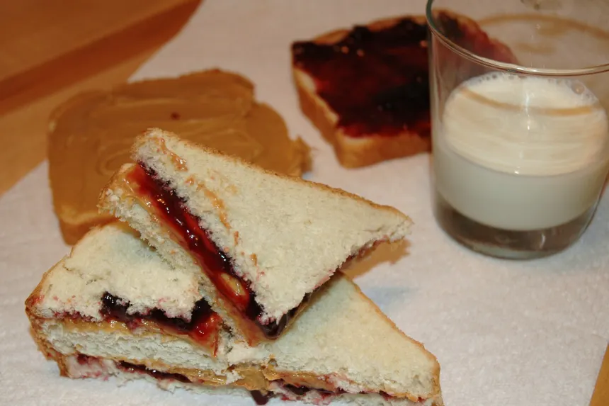

Classic Peanut Butter and Jelly Sandwich

Nothing fancy, just a classic. Either smooth or crunch peanut butter is acceptable. Classically, the jelly is either strawberry or grape
Ingredients
- 2 slices of sandwich bread
- 2 tablespoons peanut butter
- 2 teaspoons grape jelly or 2 teaspoons strawbrery jam
Steps
- Spread the peanut butter on one piece of bread.
- Spread the jelly on the other side.
- Put the two pieces of bread together to form a sandwich.
- Toddler adaptation: cut off crusts before serving.